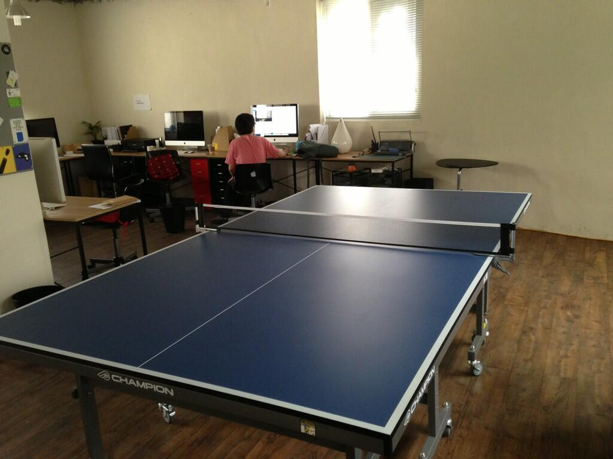
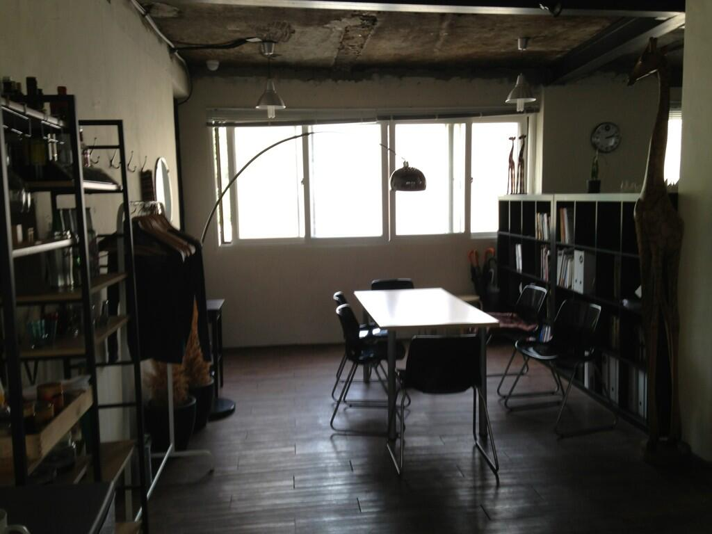
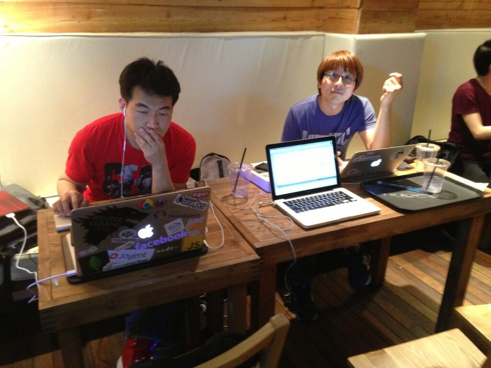

About Author

Insanehong
blog: http://insanehong.kr
twitter: @insanehong
github: insanehong.github.com
- NAVER Corporation, Front-End Engineer(2013~)
- Like Javascript, Dart, HTML5, CSS3,Responsive Web, Haroopress, Frends, Lean Startup, Open Source
- Hackrslab co-founder
- About me http://about.me/insanehong
About this Article
Date Released:
Sunday, May 26 2013 4:08 AM오픈소스 제대로 활동하기 멘토링 후기
오픈소스 제대로 활동하기 멘토링
- 장소 : 토즈 홍대점
- 일시 : 13. 05. 25 15:30 ~ 17:30
- 주제 : 트위터 국내 유일 개발자 이희승에게 오픈소스프로젝트 활동하는법 배우기
- 발표자 : 이희승 at Twitter
이글은 트위터 국내 유일 개발자 이희승에게 오픈소스프로젝트 활동하는법 배우기에 참여한 하루동안에 기록을 남긴 글로서 발표내용을 공유하려는 목적이 아닌 모임을 통해 보고 느낀것 , 개인적으로 인상 깊었던 내용을 정리하고 하루동안 있었던 일을 리뷰하는 목적으로 작성되었다.
혹여나 이글을 통해서 발표의 전체내용을 알고 싶다고 한다면 이 글이 큰도움이 되지 않을수도 있다는 것을 먼저 밝힌다. (단 Q&A 에 나온내용은 비교적(?) 자세히 적어 놓았다)
참여 계기
한동안 주말에 시간이 나지 않아 세미나나 스터디모임등에 참석하지 못하였는데 때마침 여유가 생기게 되어 참석할 만한 세미나를 찾던중 onoffmix 에서 발견한 트위터 국내 유일 개발자 이희승에게 오픈소스프로젝트 활동하는법 배우기 라는 재미있는 주제의 모임을 발견!! 평소 오픈소스 프로젝트에 관심도 많았고 개인 프로젝트로 진행하는 것도 있고 한 터라 1초의 고민도 없이 참가 신청과 동시에 참가비 입금까지 완료 하였다.
멘토링 참가전 잠시 사무실 투어
택시를 타고 모임장소인 홍대입구역 2번출구로 향하던길에 홍대근처에 사무실이 있으신 평소 트위터와 ajaxian.kr yammer group 을 통해 알고 지내고 있던 김개발님과 연락을 하게 되었다. 모임에도 함께 참여하시기에 모임에 동행하기로 하고 남는 시간을 빌어 사무실로 놀러가게 되었다.
그리 크지도 작지도 않은 사무실의 인테리어는 마치 카페를 연상시키는 분위기 였고 넓은 공간을 차지하고 있는 탁구대가 참 인상이 였다.

잠시 사무실을 둘러보고 평소 움직이지 않은 몸뚱이를 굴려가며 21점 내기 탁구 한게임! 듀스까지 가는 우여곡절 끝에 22대 승리 한것은 자랑!!

시간이 좀 많이 남은 관계로 탁구도 치고 이런저런 얘기를 나누며 시간을 보내고 모임장소인 토즈 홍대점 점으로 향하 였다.
오픈소스 제대로 활동하기 멘토링
발표자 이희승님은 netty 프로젝트 와 Apache MINA 프로젝트 설립자로서 현재 full time open source 개발자로서 twitter 소속으로 일을 하고 계시며
Open Source개발자의 롤모델로서 0순위로 꼽히고 있다.
모임 장소에 도착하니 거의 시작이 임박한 상황이였다. Outsider 는 이미 도착하여 자리를 잡고 앉아 있었다. 가볍게 인사를 나누고 부랴부랴 자리를 잡고 앉으니 멘토링이 시작 되었다.
온라인 기사나 트위터등으로만 접하고 실제로는 이희승 님을 처음 보았다. 짧게 자른(거의 삭발에 가까운듯한) 머리와 수수한 차림이 너드의 향기가 물씬 느낄수 있는 분위기 였다.
어째든 멘토링은 시작 되었고 특유의 조용 조용하고 차분한 목소리로 오픈소스 개발에 대한 이런저런 이야기를 들려 주셨다.
발표 자체는 임펙트가 있다거나 카리스마가 넘치는 그런 발표는 아니였지만 그 내용만은 머리에 쉽게 이해되고 쏙쏙 박히는 발표였다.
발표내용은 이후에 소개 할테지만
- 오픈 소스 활용 vs 활동
- 오픈소스 활동 목적
- 오픈소스 제대로 활동하기
- 새로운 오픈소스 프로젝트 시작하기
- 오픈소스 사례소개
- Q&A
이렇게 6가지 큰 섹션으로 진행 되었으며 특이하게 온라인, 오프라인에서 참여하여 이희승님의 발표를 들었다.
보통 성공한 발표는 잘 정리되고 먹고 좋게 차려진 한정식 같은 느낌이라면? 이희승님의 발표는 조촐해 보이지만 자식을 위해 차려진 어머니 밥상 같은 느낌이랄까?? 화려함도 획기적인 내용도 아니였지만 머리에 쏙쏙 들어오면서 듣는과 동시에 이해가 되어지는 그런 발표였다.
모임이 다 끝나고 뒷풀이 격인 행사가 있었지만 이미 @GeekDani 와의 선약이 있었기에 참석하지는 않았다. (이분들과 함께 한시간 또한 뒷풀이에 참석하는 것보다 더 유쾌하고 즐거운 시간이였다.)

온라인,오프라인으로 동시에 진행 되어 중간중간 온라인 참석자들을 위해 마이크를 교체한다거나 하는 예기치 않은 브레이크 타임이 좀 자주 있었던 점과 혹시나 발표에 방해가 될가 싶어 발표하시는 모습을 사진으로 남기지 못한 점은 조금 아쉬운 부분으로 남는다.
오픈소스프로젝트 활동하는법 배우기
지금부터 나오는 내용은 모임 참석에서 보고 들은 내용을 나름 정리한 것이다. 발표 섹션과 1:1 매칭되는 글이 아닌 관계로 자세한 발표자료가 필요한경우 모임 주최측에서 공개하는 발표자료를 보기 바란다.(공개되었는지는 확인해 보지 않았다.)
- Outsider님의 멘토링 모임 후기 추가. (정말 잘 정리해 주셨다)
오픈소스 프로젝트에 참여 한다는 것
발표하신 내용과 질의응답을 통해 거듭 말하신 내용에는 오픈소스 프로젝트에 참여 한다는 것에 너무 어렵게 다가설 필요가 없다는 내용이 많이 담겨져 있었다.
이번 발표를 들으며 정리해본 오픈소스 프로젝트에 참여하는 방법은 아래와 같은 일들을 포함하고 있다.
- 오픈소스 프로젝트 활용
- 패치 요청
- 기능 요청 및 등록
- 버그 리포트
- 커뮤니티 활동을 통한 의견 교류
- 프로젝트 문서 수정 혹은 번역등
이러한 활동 모두가 오픈소스 프로젝트에 참여 하는 것이다. 즉 스스로 코드레벨을 다루지 않더라도 오픈소스 프로젝트 발전을 위해 하는 모든 활동자체가 오픈소스 프로젝트에 참여하는 것이다.
물론 개발자의 바램은 직접 코드레벨을 다루는 'Committer' 혹은 pull request 등을 통해 오픈소스 프로젝트에 Contributing 하는 것을 꿈꾸고 있을 것이다.
하지만 이런 생각을 가진 사람들중 대부분은 생각을 행동으로 옮기지 못한다. 그 이유는 단순하다. 걷기도 전에 달리려고 한다는 것이다.
접근 방법을 달리 한다면 차근차근 한발 한발 오픈소스 프로젝트의 기여자로 혹은 개발자로 발전해 나갈수 있다. 또한 직접적인 참여가 아니더라도 오픈소스 프로젝트 자체에 간접적인 참여를 통하여 얻을수 있는 좋은 것들도 많이 있다.
- 이슈 혹은 버그 리포트 등록도 오픈소스 프로젝트 로드맵 수립에 기여 하는 한가지 방법이다.
- 직접적인 참여를 하지 않더라도 다른 인종간, 다른 개발 문화간, 다양한 경험등을 오픈소스 프로젝트를 살펴보면서 간접체험하고 몸으로 익히는 것 자체도 오픈소스 프로젝트를 통해 얻어가는 중요한 결과물중 하나이다.
- 자신이 어필한 기능 혹은 버그 리포트가 실제 오픈소스 프로젝트에 적용되지 않더라도 그 자체 만으로도 다양한 사고와 방법, 통찰력을 향산시켜주는 역활을 한다.
- 이렇게 점차 한발 한발 발전해 나간다면 언젠가 해당 오픈소스의 커미터 혹은 컨트리뷰터로서 참여하게 될 여지가 많다.
이처럼 다양한 방면으로 오픈소스 프로젝트에 참여하면서 한걸음 한걸음 단계성장을 하는 과정을 거듭하면 본인의 가치와 실력, 통찰력을 높혀주는 일이 될것이니 본인의 패치가 적용되지 않았다고 해서 실망하지 말 것을 당부 하셨다.
오픈소스 프로젝트 개발자에게 차단 당하지 말자.
이날 진행된 발표에서는 재미있는 내용이 있었다. 바로오픈 소스 프로젝트에 참여하고자 할때 주의해야할 점과 오픈소스 프로젝트 개설자에게 차단 당하지 않는법(이부분에서 빵터졌다.)이다.
반드시 이슈트레커 혹은 공식 메일링 그룹을 사용하라
이부분은 참 재미있다. 특히 공식 채널을 이용해서 요청하라는 말을 거둡 강조하셨다. 이는 개발자에게 차단당하지 않는 가장 좋은 방법이라고 하셨다.
버그 리포트나 패치 요청이 공식채널이 아닌 개인 메일이나 IRC 를 통해 이루어 지는 경우가 있는데 이는 해당 이슈의 히스토리를 남길수도 없게 되며 결국 공식체널을 통해 등록하라는 답변을 듣게 될것이며 동일한 문제를 겪고 있는 사용자들이 참고할만한 레퍼런스를 만들어 낼수도 없는 문제가 있기 때문에 반드시 공식 채널을 통한 요청을 해야한다고 말씀하셨다.
심지어 본인이야기는 아니지만 개인전화로 연락하는 경우도 더러 있다고 하셨다.
그리고 또하나 재촉하지 말라는 말을 하셨다.
버그 리포트를 예로 개인이 볼때는 하나의 버그 리포트 이지만 개발자는 이런 버그 리포트를 수많은 사람에게서 받기 때문에 프로젝트 로드맵에 따라 우선순위를 결정하고 처리를 하게 된다.
개인에게 급한 일이지만 개발자에게는 대수롭지 않은일 혹은 후에 처리해도 될만한 일이 될수도 있기 때문이다.
그렇게 계속 재촉하는 경우 intanal 패치를 하면 될것이다라는 답변을 받는게 전부가 될 수도 있다고 하셨다.
동일 요청이 있는지 확인하라
동일한 요청 확인은 매우 중요한 부분이다. 특히 같은 내용이 여러개 등록되는 것보다 하나의 이슈에서 vote나 watch와 같은 기능의 카운트가 높은 경우 로드맵 설정에서 높은 우선순위를 부여 받을 수 있다는 것을 말씀 하셨다.
동일한 내용외에 추가적인 사항이 있다면 그부분만 이슈에 추가 하여 비슷한 이슈가 한곳에서 확인 가능하도록 하는 것도 중요한 일이라고 말씀해 주셨다.
요청은 최대한 자세하면서도 깔끔하게 정리하라
이슈 혹은 패치를 요청 할 경우 해당 기능이 왜 필요한지 혹은 어떤 상황에서 발생한 이슈인지를 기술해 주어야 하며
특히 버그 리포트의 경우는 해당 버그가 발생한 환경 연관되어 사용되어진 dependency 라이브러리등과 같은 정확한 현 상황을 파악할수 있는 내용이 포함되어지지 않을경우 개발자가 이를 트레킹 하는것은 불가능에 가까울수도 있기에 주의해야한다고 하셨다.
버그 리포팅에 포함되어야 할 내용들
- Affected Version(s)
- Environment
- How to reproduce
- Unit Test 와 같은 최소한의 코드조각을 사용하는게 좋음.
- 발생 빈도, 환경에 대한 내용을 반드시 기제해주는 것이 좋음.
패치를 요청할 경우는 개발자 가이드 를 숙지하라는 말도 잊지 않으셨다.
새로운 OSS 프로젝트 시작하기
기업, 개인 등이 오픈소스 프로젝트를 시작할때 생각해봐야 할 것들을 자세히 설명해 주셨다. 발표내용을 정리해 보면 오픈소스 프로젝트는 신뢰의 문제이며 의지의 문제로 정리 할수 있을 것 같다.
예를 들어 한 기업이 오픈소스 프로젝트를 계획한다고 했을때 과연 이들은 오픈소스 소프트웨어를 개발하려는 것일가?
이것은 매우 중요한 일이다. 오픈소스 프로젝트의 최종 목적은 해당 프로젝트가 언제까지 지속가능할 것인가를 결정한다.
기업과 개인이 이익을 넘어설 수 있는가?
기업의 오픈 소스 프로젝트는 대부분 그로 인한 수익사업을 먼저 예상하고 시작하는 경우가 많다. 이때 예상했던 수익이 나지 않는 경우 해당 프로젝트가 없어져 버리는 일도 생긴다.
이것은 오픈소스를 가장한 수익사업일 뿐이다. 물론 오픈소스 프로젝트를 하면서 부가적으로 수익이 생길 수도 있다. 하지만 그것이 최종목표여서는 안된다는 말이다.
다음은 신뢰할 수 있고 지속 가능한 OSS가 되거나 그런 프로젝트를 선택할때 고려사항들이다.
- "믿을만한 친구인걸" 이라고 말하고 인정받을 만한 자격이 있는가?
- 특정 기업에 의해 진행 되는 OSS 프로젝트의 경우 내부 조직원 왜에도 참여가 가능한가?
- 지속적으로 유지할 계획이 있는가
- Open source is not a dumping ground.
- Open source is not a dumping ground.
- When open is not open
- 내부 수정본 없이 작업할 수 있는가?
- 내부 수정본이 필요하다면 자주 동기화 할 계획이 있는가?
- 커뮤니티로부터의 제안을 "믿을만하게" 처리할 수 있는가?
특히 기업에서 OSS 프로젝트를 진행한다면 반드시 그 구성원은 OSS 에 의지와 관심을 가지고 있고 뜻이 맞는 사람들고 구성되어야 한다고 했다. 이는 실력을 떠나 커뮤니티 혹은 패치,버그 리포트 로 쏟아지는 각종 이슈들을 처리할 우선순위가 이에 관심이 없는 사람에게는 나중에 하지 뭐? 가 되어버린다.
Q & A
마지막 섹션이였던 Q&A에서 나온 질문과 답을 간략하게 정리해 보았다.
Q . 커미터가 되기까지 걸린 시간은 얼마나 걸리는것 같은지? 커미터 까지 시간을 단축하는 방법이 있을가?
- 분산 버전관리 시스템으로 인해 커미터의 경계가 애매해 진것 같음
- 소셜 코딩이 가능하면서 접근성이 쉬워졌다고 생각함.
- 결정권자와 경험등의 공유등이 많고 코드베이스에 대한 이해가 많을 경우 더 쉽다.
- 소규모 프로젝트의 경우 2~3주 정도면 가능하지 않을가??
Q. 개발자 가이드는 누가 만드는건지?
- 대부분 프로젝트 개설자가 만들며 작은 프로젝트의 경우 없는 경우도 있음
- 프로젝트가 커지게 되면 개설자가 원하지 않는 방향성의 코드가 나오게 될수도 있으므로 프로젝트 시작 이후에 필요에 의해 천천히 유기적,점진적으로 만들어지는 경우가 많음.
Q. 학생들의 경우 관심있는 프로젝트가 있어도 이미 대형화되어 버려 쉽게 다가서지 못하는 거 같은데 쉽게 프로젝트에 다가설수 있는 방법이 있는지??
- 어느 조직에 있던지 레거시는 존재. 그로인해 단순 코더로서 좌절하게 되는 경우도 있지만 작은 것부터 시작해서 하나씩 하나씩 해나가는 경험이 중요하다고 생각함.
- 처음부터 큰것을 이룬다기 보단 작은 것부터 끈기 있게 지속적으로 하는 것이 중요하다고 생각.
Q. framework 만들면서 가장 중요하다고 생각하는 것은 무엇인가?
- 사용자가 개발자이기에 사용자를 이해하는 것이 다른 프로젝트보다 쉽고 만들기도 쉬움.
- library나 framework를 사용할 개발자 입장에서 해당 프로젝트를 바라보고 사용성을 가장 먼저 고려해야함. API 디자인이 중요.
- API 호출의 단순함, 테스트의 간소성을 미리 생각해 둘 필요가 있음.
- 프로젝트 개발자 느끼기엔 편한 기능이 타인에게는 불편하다고 생각할수 있기 때문에 리포트가 들어왔을 경우 프로젝트의 방향과 지향점을 해치지 않는 범위내에서 피드백에 대해 잘 반응 해주는 것이 중요함.
Q. 대형화된 프로젝트에서 커뮤니티 채널과 개발자가 바라는 기능등을 정리하는데 시간 분배를 어떻게 하는지
- 특별히 관리하지 않음.
- 해당 이슈가 현재 버전에 적용되어야 하는 내용인지를 체크
- 질의 응답의 경우 stackoverflow 를 통해 몇일 혹은 일주일에 한번씩 체크후 몰아서 답변하는 경우가 있음.
- 메일은 너무 많이 와서 다 확인하지 않고 넘어가는 경우도 많음.
Q. Branch 관리는 어떻게 하시는지
- 특별한건 없고 Master 와 이전버전의 Branch 만 사용하기 때문에 현재는 매우 간딘함.
Q. 프로젝트에 오픈소스가 적용되었을때 해당 라이센스에 대한 표기는 어떻게 하는가
- 라이센스 해더는 절대 수정 해서는 안된다.
- 해당 오픈소스의 라이센스 정책을 기제 해주어야함.
- 라이센스 종류에 따라 결정.
Q. 오픈소스활동이 트위터 취업에 도움이 되었는지?
- 오픈소스 활동을 대학생때부터 시작했음
- netty 는 학부시절 시작
- 첫눈,nhn을 거쳐 레드헷부터 full time open source 개발자로 전향. 이후 이직을 해야겠다고 생각했을때 트위터에서 연락이 왔음.
Q. 국내의 오픈소스 활동이 활성화 되기 위해서는 어떤 점이 바뀌어야 한다고 생각하는지?
- 개발자의 여유시간이 많지 않다고 생각해 회사와의 연계가 되면 가장 좋다고 생각함.
- 긍극적으로 자사의 서비스 안전성,성능 향상이 목적이지만 소프트웨어 엔지니어링 관점에서 한부분에 기여를 하고 있다는 것에 대한 자부심, 기술적인 우아함 등을 고려해 지원해주는 것이 필요하다고 생각함.
Q. internal technology 오픈에 폐쇄적인 기업들이 open source 전향할때 고려할 점
- 의사소통 창구가 잘 되어 있는지?
- 구성원의 마인드가 중요.
- 단순히 겉으로 오픈소스라고 포장하는 것은 아닌거 같다.
Q. 오픈소스 활동을 하면서 만나본 한국인 개발자에 대한 느낌과 이들이 사용하는 영어 실력은 어떠한가?
- 별로 만나본 일이 없다.
- 주로 질의 응답을 많이 하기에 다른점을 느낄만한 게 읍다.
- 영어는 … 공학영어는 거기서 거기라 ...
Q. 외국회사에서 리쿠리팅을 할때 어떤점을 고려하는 것 같은가?
- 전화면접은 하지 않아 모르겠다.
- 주어진 문제를 어떻게 해결하려고 하는가 라는 과정이 중요한 것 같음.
- 알고리즘 문제에서는 어떤 식으로 처리 하겠다 얘기한 것도 있지만 어떤 알고리즘이 적용되는지는 잘 모르겠다고 생각되는 부분은 블랙박스 처리해서 추후에 처리한다고 해놓았었다.
마무리
주위에 OSS 에 직접 참여하고 계신분 혹은 Contributing 을 하고계신분들이 참 많다. 본인도 그닥 내새울만한 것은 아니지만 작은 개인 프로젝트를 진행중이기도 하여 이번 멘토링 모임에 큰 기대를 가지고 있었고 참여했다는 것을 참 잘했다고 생각하고 돌아왔다.
어찌보면 우리는 오픈소스 프로젝트는 너무 거창하고 대단한 것이고 이것에 참여하는 일은 엄청난 실력자 혹은 특별한 사람들이라는 장벽을 스스로 만들고 있는지도 모른다.
이번 멘토링에서 이희승님이 말씀 하시고자 하는 내용도 별것 아니니 너무 겁먹지말고 일단 시작해보라 가 아닐가?
마지막으로 본인이 하고 있는 프로젝트에 관심이 있거나 혹은 이런게 있으면 좋겠다 하는 것을 패치해주시거나 혹은 이슈로 등록해주시라는 홍보를 남기며 글을 마친다.